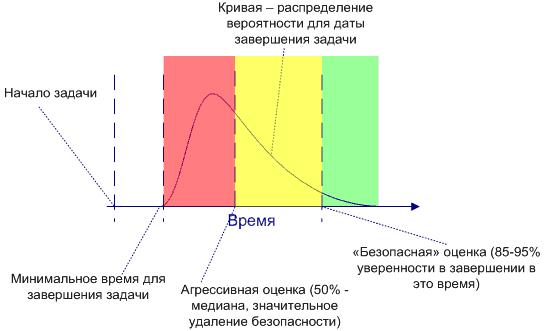
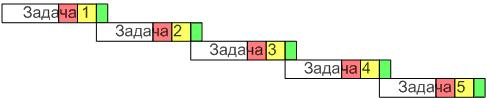
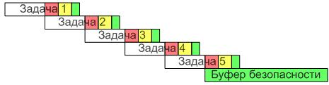
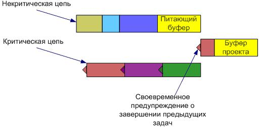
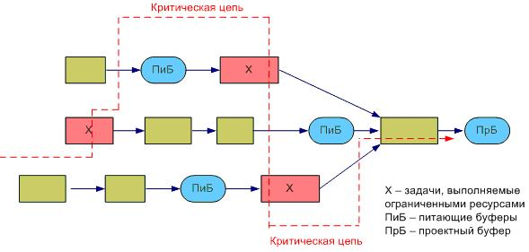

Традиционный подход к управлению неопределенностью и рисками
При традиционном подходе к управлению проектами, проблемы, связанные с неопределенностью (т.е. с законом Мерфи: Если какая-нибудь неприятность может произойти, - она случается, законом Паркинсона: Работа стремится занять все время, отпущенное на нее) и одновременной работой сотрудников над несколькими задачами (например, в нескольких проектах), решают следующими способами.
Включение в оценку задачи рисков и неопределенностей
Часто и сотрудник, и его руководитель стремятся заложить в оценку задачи неопределенности и риски, которые они предвидят. Неопределенность, к примеру, может быть связана с такими факторами, как новая технология, неопытность исполнителя в области выполнения задачи, недостаток информации о задаче на момент оценки.
Минимизировать риски пытаются тем, что добавляют резервное время для каждой задачи. Поскольку время окончания задачи определяется не одной цифрой, а распределением вероятности, то графически оценку задачи в традиционном управлении проектами можно изобразить так, как показано на рис. 9.1.

Рисунок 9.1 - Время окончания задачи как распределение вероятности
В оценку задачи включаются риски с целью минимизировать влияние закона Мерфи. И хотя такая оценка делается экспертами или исполнителями оцениваемой задачи (что хорошо и правильно), время на неопределенность часто добавляется «на глаз».
Таким образом, почти каждая задачи содержит дополнительный запас прочности, превышающий действительно ожидаемое время завершения данной работы. Часто оценки рисков задачи больше самого времени выполнения работы.Со стороны работника такой подход приводит к следующим негативным тенденциям. Проявляется «синдрома студента»: когда работник видит, что у него больше чем достаточно времени для выполнения задачи, он начинает работу позже.
Таким образом, ресурсы выполняют более срочные задачи или тратят время резерва на работу над самой задачей, считая, что все время выделено на работу над ней. И если риски, заложенные в резервном времени, срабатывают, задача запаздывает.
Фокус на запланированных датах начала и окончания задачи
При традиционном подходе к управлению проектами люди стремятся начать и завершить задачу точно в запланированное время, которое содержится в плане и накладывает определенное обязательство на исполнителей.
Этот подход кажется правильным с первого взгляда, но несет в себе значительные недостатки и не использует возможные положительные события в проекте.
Во-первых, досрочное завершение работ по задаче не приводит к приближению даты окончания проекта. Исполнители, которые должны начать выполнение зависимых задач, не имеют возможности этого сделать, т.к. они заняты выполнением другой работы и не рассчитывали начинать свои задачи ранее запланированного.
Таким образом, раннее завершение задачи не может ускорить запаздывание зависимых от нее задач и положительно повлиять на успех всего проекта.Во-вторых, запаздывание задачи почти всегда приводит к задержке зависимых задач, т.к. на этапе планирования все риски были заложены в самих задачах (см. рис.9.2).

Рисунок 9.2 - Задачи, содержащие в себе значительный резерв по времени, планируются одна за другой
В случае сдвига по времени типичным решением в традиционном управлении проектами является применение корректирующих действий при срабатывании рисков путем урезания объема работ проекта или выделения дополнительных ресурсов. Это не делает счастливым ни заказчика, ни руководителей верхнего уровня.
Управление неопределенностью и рисками с использование метода критической цепи
Метод критической цепи (МКЦ) был предложен Элияу Голдраттом (Eliyahu Goldratt) в 1997 году.
МКЦ - это метод планирования и управления проектами, который обращает большее внимание на ограничения, связанные с ресурсами проекта.
Он основан на методах и алгоритмах теории ограничений. Этот метод противоположен методам критического пути или PERT в том смысле, что он не предполагает жесткой последовательности задач и жесткого планирования. Напротив, календарный план, составленный с использованием МКЦ, содержит выровненную нагрузку ресурсов по времени, но требует от исполнителей задач быть гибкими по ношению ко времени начала выполнения задач и быстро переключаться между задачами и цепочками задач (но не работать над ними одновременно), с целью удержать весь проект в рамках запланированного времени.
То есть МКЦ предлагает сконцентрировать внимание не на достижении оценок задач и промежуточных вех, а на достижении единственно важной даты - обещанной даты завершения проекта.
МКЦ вводит такое понятие, как критическая цепь задач, или просто критическая цепь. Критическая цепь - это последовательность задач, от длительности которых зависит общая длительность всего проекта. МКЦ устраняет перечисленные выше недостатки планирования, выполнения и контроля классического управления проектами с помощью следующих подходов.
Устранение влияния закона Паркинсона
Напомним, закон Паркинсона гласит, что работа займет все время, отведенное на нее, сколько резервного времени мы бы в нее не закладывали.
Работа ресурсов над задачей в традиционном менеджменте проектов занимает все отведенное время ввиду комбинации следующих причин: наличие жестких дат окончания задачи и «безопасных» оценок задачи, включающих резервы времени4. Для устранения этих проблем МКЦ предлагает следующие действия:
- Создавать календарный план, используя достаточно плотные оценки длительности задач. Чаще всего в МКЦ в качестве длительности задачи принимается оценка с 50% обеспечением риска, так называемая агрессивная оценка (см. рис.9.1).
- Избавиться от жестких дат окончания задачи (но не проекта). Безусловно, задачи по-прежнему оцениваются и имеют дату окончания в календарном плане. Но эта дата не рассматривается как обязательство исполнителей закончить работу над задачей именно в указанный срок.
- В матричной организационной структуре имеет смысл наделить менеджеров проектов достаточной полнотой власти, чтобы они могли защитить ресурсы проекта от «более срочных» задач других проектов или подразделений.Рассмотрим, что нам дают эти правила.
Поскольку задачи оцениваются с 50% обеспечением риска по времени, то требование МКЦ о построении календарного плана с использованием только времени, необходимого для выполнения задач, выполняется. И т.к. мы убрали обеспечение безопасности из оценок задач, то рассматривать конечные даты завершения каждой задачи как нечто непременно выполнимое, смысла больше не имеет.Таким образом, описанные техники помогают нам избавиться от закона Паркинсона.
Использование положительных моментов досрочного завершения задачи для достижения успеха проекта
МКЦ условно делит ресурсы на две категории:
- ресурсы, выполняющие критические задачи,
- ресурсы некритических задач.
В этом контексте, те ресурсы, о которых мы действительно должны заботиться, - это ресурсы критических задач, т.к. их использование напрямую влияет на длительность проекта. И мы хотим быть уверены, что когда задача в критической цепи завершается, ресурсы для выполнения следующей задачи критического пути будут готовы и доступны.
Два простых шага, выполняемых с известной долей профессионализма, позволят использовать преимущество раннего завершения для задач в критической цепи. Во-первых, необходимо собрать информацию у ресурсов: за сколько нужно их предупреждать, что они должны прервать свою текущую работу и переключиться на более важные задачи критической цепи. Во-вторых, требовать, чтобы ресурсы периодически предоставляли оценки о времени, требуемом для завершения их текущих задач («буфер предупреждения»).
Имея эту информацию, мы можем отслеживать когда оценка оставшегося времени текущей задачи критической цепи становится меньше буфера предупреждения исполнителя зависимой задачи, и уведомлять последнего о том, чтобы он был готов вскоре начинать свою задачу.По сравнению с традиционным управлением проектами, это шаг от мониторинга и отчетов вида «что было сделано», используя процент завершения работ (который, кстати сказать, довольно субъективен), к тому, что следует считать имеющим ценность с точки зрения статуса проекта - сколько осталось времени для выполнения незавершенных задач.
Использование буферов времени и ресурсов для предотвращения действия закона Мерфи
Отлично, мы сократили оценки до минимально допустимых, тем самым сконцентрировав все усилия на выполнении задачи. Мы используем преимущества раннего завершения задач. Но если у нас теперь нет «железной» даты, до которой задача должна быть завершена, как мы узнаем, когда ресурс у нас будет доступен для других задач? И, кроме того, как теперь быть с рисками, которые теперь не минимизируются дополнительным временем задач?
Для того чтобы защитить дату окончания всего проекта от вариаций задач, МКЦ использует буферы ресурсов и времени. В этом разделе описывается использование буферов времени. В МКЦ особое внимание уделяется задачам критических цепей. Все, что мы делаем, это аккумулируем резервное время всех задач цепи, которое составляло от 50% до 90% покрытия неопределенности, оставляя для самих задач только 50% покрытия. Эти размазанные по всем задачам резервы суммируются в единый буфер времени, который помещается в конце цепи (см. рис. 9.3).
Таким образом, вариации в критической цепи не имеют прямого влияния на обещанную дату окончания проекта, т.к. они гасятся буфером времени.

Рисунок 9.3 - Буфер времени, помещенный в конец цепи, предохраняет ее от задержек по времени
Поскольку мы оставляем только 50% покрытия рисков в оценке задачи, мы можем ожидать, что в половине случаев задачи завершатся раньше запланированного, в половине - позже. В МКЦ мы активно используем преимущество раннего завершения задач. Что до запаздывающих задач, то их будет компенсировать буфер цепи. Не вдаваясь в статистику, констатируем, что суммарный буфер должен быть значительно меньше составляющих его отрезков времени от резервов индивидуальных задач (на 30-50%).
Что касается задач некритической цепи, то здесь мы не хотим заниматься микро-менеджментом для каждой задачи и исполнителя, как в случае с критическими цепями, с использованием уведомлений о завершающихся задачах. Тем не менее, мы также хотим, чтобы задачи некритического пути также не повлияли на успех проекта.
Что предполагает традиционный подход к управлению задачами некритического пути? Начинать задачи как можно раньше и надеяться, что запаса времени некритических задач хватит для покрытия рисков.
В отличие от традиционного управления проектами, в МКЦ мы используем не только свободное время (float) для некритических задач, но и тот же подход с буфером в конце цепи (теперь уже некритической), который был описан для критических задач. Этот буфер, назовем его «питающим», предохраняет зависимые критические цепи от вариаций по времени в некритических цепях.

Рисунок 9.4 - Составление расписания по МКЦ
Для некритической цепи мы не используем каких-либо дополнительных инструментов для того, чтобы избежать последствия задержки выполнения задач (например, предупреждение о приближающейся работе). Для таких задач у нас и без того имеется двойной буфер: свободное время некритической цепи (float) и питающий буфер.
Таким образом, составление расписания по МКЦ использует «питающие» и проектные буферы времени, а также буферы ресурсов (описывается в следующем разделе).
Использование буфера ресурсов
Особо интересным инструментом в МКЦ является использование буферов ресурсов. Можно условно выделить два вида таких буферов.
Во-первых, то время, за которое мы предупреждаем исполнителя о том, что скоро у него возникнет задача из критической цепи, и является ресурсным буфером.
Второй тип буфера - это выделение альтернативных (дополнительных) ресурсов для задач критической цепи. Этот буфер имеет смысл, когда задачи могут подвергаться частым изменениям. В этом случае, добавление ресурсов означает защиту от рисков финальной даты окончания проектов.

Рисунок 9.5 - Критическая цепь в данном случае состоит из задач, выполняемых ограниченными ресурсами
На рис. 9.5 показана критическая цепь, которая образована ограниченными ресурсами. Соответственно, буферы, используемые в этой ситуации, используются скорее не для того, чтобы предотвратить недостаток времени (неверные оценки). Буферы ресурсов времени в этом случае используются для управления рисками, связанными с ограниченными ресурсами.Питающие буферы стоят перед задачами критических ресурсов, предохраняя таким образом задачи критической цепи от сдвига по времени в случае задержки задач некритических цепей.
Буфер как средство мониторинга и контроля
Прогресс проекта и точность планирования с использованием МКЦ часто отслеживается не по классической технике анализа освоенного объема (earned value analysis), а по проценту использованных буферов. Т.е. чем больше времени, запланированного в качестве буфера, использовано, тем большее влияние неопределенности на проект в виде реализовавшихся рисов. Отслеживание оставшегося буферов времени для задачи используется в МКЦ для мониторинга статуса задачи: при достижении минимального порогового значения буфера необходимо предпринять корректирующие действия. Аналогично, процент использования проектного буфера служит как триггером для определения выполнимости обещанной даты завершения, так и показателем успешности проекта (например, если использовали не более 50% проектного буфера времени, проект следует считать очень успешным).
Практические шаги для использования МКЦ
Суммируя все описанное, можно порекомендовать следующий комплекс практических шагов для использования МКЦ:
- Объяснить исполнителям, что они должны защищать свои оценки от давления со стороны начальства и других заинтересованных сторон проекта.
- В качестве оценки длительности задач брать оценки с 50% покрытием неопределенности.
- Исключить конкуренцию за ресурсы путем выравнивания нагрузки. Это также уберет необходимость переключения ресурсов между задачами. Критическая цепь теперь может быть определена как наиболее длинная цепь пути и зависимости ресурсов.
- Вставить проектный буфер в конце проекта для аккумуляции резервного времени (изначально - примерно 50% от длины пути критической цепи).
- Защитить критические цепи от недоступности ресурсов с помощью буферов ресурсов.
- Рассчитать и расставить питающие буферы для всех путей, от которых зависят критические цепи.
- Планировать задачи, которые не зависят ни от каких других задач, от конечной даты проекта к его началу. Это будет дополнительным обеспечением отсутствия многозадачности ресурсов.
- Отслеживать и добиваться запланированной производительности ресурсов. Исполнители должны работать над задачами так быстро, как это возможно, и отдавать результат своей работы, как только она завершена.
- Предоставлять ресурсам информацию о длительности и об оценочном времени начала задачи, но не о вехах проекта. Это должно заставлять ресурсы отдавать результаты свой работы как только она закончена.
- На этапе выполнения проекта происходит активное управление выделенными буферами времени и ресурсов, чтобы минимизировать задержки выполнения задач, но сохранить реалистичным одно из главных обещаний проекта - дату его завершения.
Таким образом, МКЦ помогает избежать действия закона Паркинсона и, в то же время, защититься от закона Мерфи. Рассмотренный метод концентрирует вниманием менеджера проекта на производительности команды, предлагает новый метод отслеживания прогресса проекта на основе использования буферов времени и ресурсов. МКЦ может применяться практически в любых областях, где применяется методология управления проектами, не требую значительного перестроения процессов в проекте.